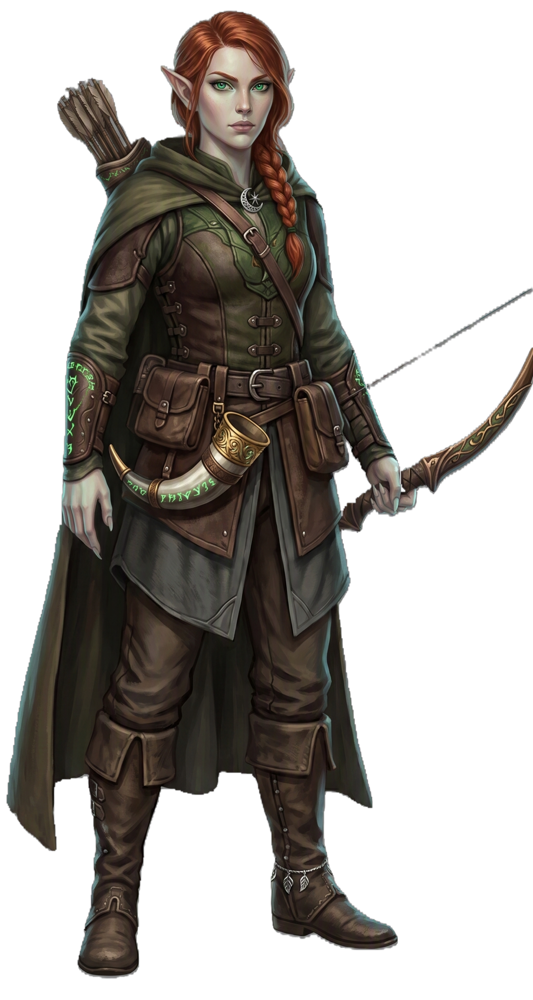

| Rolle | DPS · Reichweite · Begleiter · Fallen |
| Zauberertyp | Kein Zauberer Keine Zauberslots |
| Primärer Schadensattribut | Geschick (DEX) |
| Sekundärer Schadensattribut | — |
| Zauberattribut | — |
| TP (L1) | 10 |
| TP pro Level | 6 |
| Rüstung | Mittel (alle Rüstungen) |
| Waffen | Primalwaffen (Schwerter, Äxte, Keulen, Dolche, Speere, Bögen, Armbrüste, Wurfwaffen, Stäbe) |
| Rettungswürfe | Geschick (DEX), Weisheit (WIS) |
| Attributsteigerung (Level) | 4, 8, 12, 16 |
| Fertigkeiten (2 zur Auswahl) | Wahrnehmung, Überleben, Naturkunde, Tierführung, Athletik |
Der JÄGER ist der Herr der Wildnis. Er lebt mit der Natur, folgt Spuren, stellt Fallen und kämpft Seite an Seite mit einem tierischen Begleiter. Seine Stärke liegt nicht in roher Gewalt, sondern in Vorbereitung und Geduld — er markiert sein Ziel, schwächt es mit Gift und Fallen, und beendet es mit einem präzisen Todesschuss. Sein Begleiter ist kein Haustier, sondern ein Partner der die Frontlinie hält während er aus der Distanz zuschlägt.
| Level | Fähigkeit | Beschreibung |
|---|---|---|
| L5 | Zusatzangriff | 2 Angriffe pro Angriffs-Aktion. |
| L9 | Beutejäger | +Profan-Bonus auf Angriffswürfe gegen markierte Ziele. |
| L11 | Zusatzangriff 2 | 3 Angriffe pro Angriffs-Aktion. |
| L19 | Verbesserter Begleiter | Jagdinstinkt — Weisheit +2 (skaliert Begleiter-Fähigkeiten). |
| Fähigkeit | Aktion | Nutzung | Level | Beschreibung |
|---|---|---|---|---|
| Fallensteller | Aktion | 2/Kampf | L1 | Platziere eine Falle auf ein Feld — PHYSISCH 2W6 Schaden und Ziel wird festgehalten (RESTRAINED) wenn ein Feind das Feld betritt. |
| Schuss auf Schwachstelle | Bonus-Aktion | 1/Zug | L2 | PHYSISCH Präziser Schuss: +1W8 Bonus-Schaden auf den nächsten Angriff. |
| Schnelljagd | Bonus-Aktion | unbegrenzt | L3 | Rückzug + 15ft Bewegungsbonus für 1 Runde. |
| Giftpfeil | Aktion | 1/Kampf | L5 | Ziel muss einen CON-Rettungswurf ablegen oder wird vergiftet — NATUR 1W6 Giftschaden pro Runde für 3 Runden. |
| Sprengfalle | Aktion | 1/Kampf | L7 | PHYSISCH Platziere eine Sprengfalle auf ein Feld: 3W6 Schaden + liegend (PRONE) wenn ein Feind das Feld betritt. |
| Wachhund | Aktion | 1/Kampf | L9 | Dein Begleiter erhält +2 RK für 1 Minute. |
| Jagdpfeiff | Aktion | 1/Kampf | L11 | Signal: Alle Verbündeten in 30ft erhalten +1W4 auf ihren nächsten Angriff. |
| Todesschuss | Bonus-Aktion | 1/Lange Rast | L15 | PHYSISCH +4W6 Schaden auf den nächsten Angriff. Ab L17: Automatischer Kritischer Treffer gegen markierte Ziele. |
| Todesmark | Aktion | 1/Kampf | L1 | Markiere ein Ziel als verwundbar — es erleidet doppelten Schaden durch deine Angriffe. |
| Verbesserte Tarnung | Bonus-Aktion | unbegrenzt | L7 | Verstecke dich (HIDDEN). Ab L7 darfst du Verstecken als Bonus-Aktion nutzen. |
| Jägerentschluss | Frei | 1/Lange Rast | L1 | Wiederhole einen fehlgeschlagenen Rettungswurf — der Spieler würfelt selbst neu. |
| Begleiter | Aktion | Nutzung | Beschreibung |
|---|---|---|---|
| Wolfsbegleiter | Bonus-Aktion | 1/Lange Rast | Beschwöre einen Wolf als Begleiter für 10 Minuten. Der Wolf kämpft eigenständig an deiner Seite. |
| Bärenbegleiter | Aktion | 1/Lange Rast | Beschwöre einen Bären als Begleiter für 10 Minuten. Der Bär ist ein starker Verteidiger-Kämpfer. |
| Falkenbegleiter | Aktion | 1/Lange Rast | Beschwöre einen Falken als Begleiter für 10 Minuten. Der Falke ist ein schneller Fernkämpfer. |
| Pantherbegleiter | Aktion | 1/Lange Rast | Beschwöre einen Panther als Begleiter für 10 Minuten. Der Panther ist ein schneller Angreifer. |